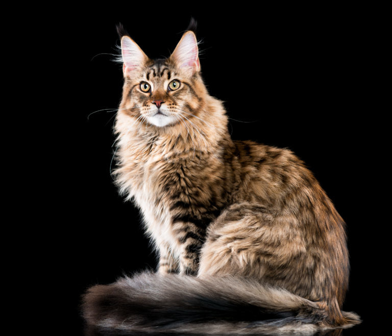
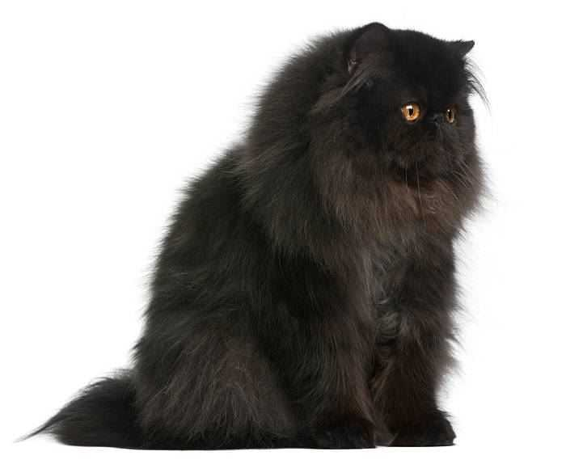
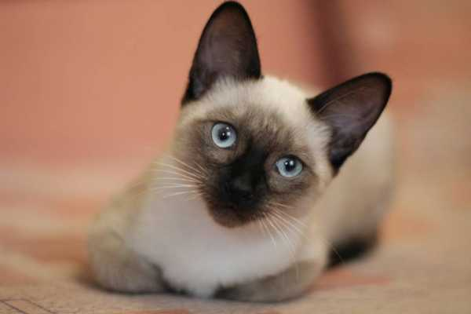
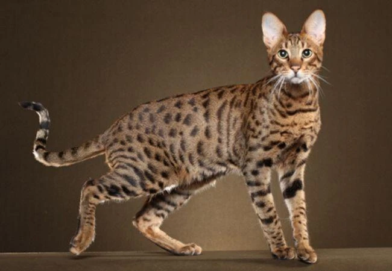

Házi macska besorolása
A macskafélék (Felidae) az emlősök osztályába, azon belül a ragadozók rendjébe tartozó család. Ausztrália (ide később az ember telepítette be őket) és Antarktika kivételével minden kontinensen és a legtöbb szigeten jelen vannak.
A macska, más néven házi macska (Felis silvestris catus) kisebb termetű húsevő emlős, amely a ragadozók rendjén belül a macskafélék (Felidae) családjának Felis neméhez és vadmacska (Felis silvestris) fajához tartozik. A vadmacska alfaja. Ügyes ragadozó, több mint 1000 faj tekinthető a zsákmányának.
Legismertebb házi macskák

Bengáli
A bengáli házi macska a bengáli leopárdmacska és egy házi macska keresztezéséből létrehozott hibrid. Az első példány e két faj véletlen párosodásból született, míg a tervszerű tenyésztés az 1980-as években kezdődött Amerikában, azzal a céllal, hogy létrehozzanak egy vadmacska külsejű, de házi macska természetű fajtát.

Maine Coon
A Maine Coon az Egyesült Államok Maine tagállamának nemzeti macskája, különleges tulajdonságai miatt. Őseik egyrészt a vikingekkel érkezett norvég erdei macskák lehettek, másrészt az Amerikába érkező európai tengerészek által a hajókon utaztatott hosszú szőrű macskák, amelyek képesek voltak elviselni a zord körülményeket.

Perzsa
A perzsa macska az egyik legrégebbi és legismertebb macskafajta, amely leginkább hosszú szőréről és lapos, kerek fejéről ismerhető fel. A fajta Perzsiából (a mai Iránból) származik, de a török angórával és a brit hosszú szőrűvel való keresztezés miatt a származása tisztázatlan. Európában való megjelenése Pietro Della Valle itáliai utazóhoz köthető.

Sziámi
A sziámi egy kedvelt, a Távol-Keletről származó macskafajta. Nevét Sziámról, a mai Thaiföldről kapta. Az első példányt Peter Simon Pallas német természettudós írta le 1794-es, Kaszpi-tengeri expedícióján. Az első példányok az 1870–1880-as években kerültek Angliába.A szakértők sem tudnak megegyezni abban, hogy a sziámi macska mutáció eredménye-e vagy a nyugat–afrikai aranymacska leszármazottja.

Szavanna
A szavanna macska az afrikai szervál és különböző házi macska fajták (egyiptomi mau, sziámi, szerengeti - sőt, egy másik hibrid, a bengáli macska) keresztezéseként létrehozott hibrid fajta. Először egy amerikai bengáli tenyésztő, Judee Frank tenyésztette ki, 1986. április 7-én született meg az első szavanna macska, egy hím szervál és egy sziámi macska gyermekeként: a neve Savannah lett (innen származik a fajta neve).